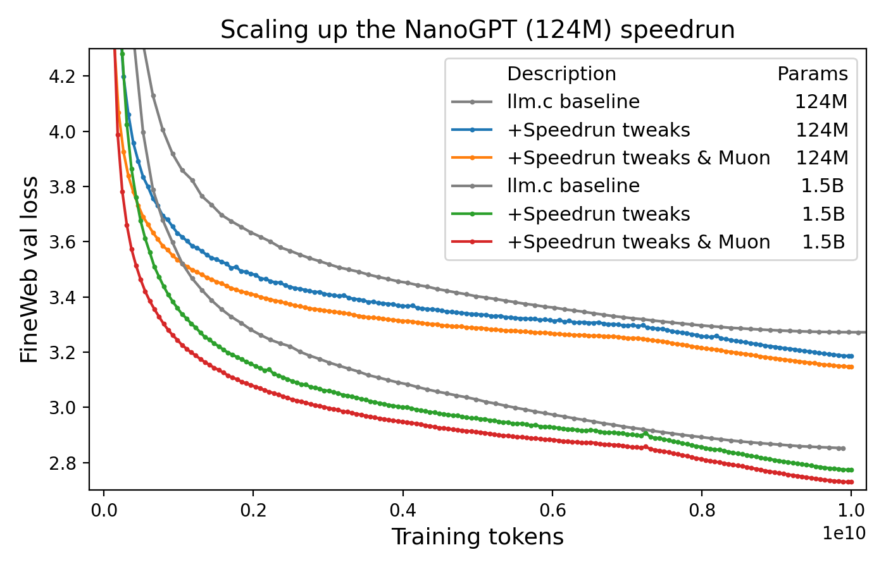

2025-07-12
Are We Entering A First-Order Optimizer Renaissance?

Welcome to the blog-post version of this meme.
Ever since Kingma and Ba dropped their evergreen banger Adam: A Method for Stochastic Optimization in December 2014, AI researchers have been struggling hard to invent new and better algorithms for training neural networks. With the notable exception of the AdamW tweak to Adam's weight decay rule introduced by Decoupled Weight Decay Regularization in 2017, a sea of new algorithms and variations have come and gone without unseating Adam from its throne.
Ever hopeful, however, AI practitioners have been continually eyeing and trying the latest practical optimizer research, and it seems that the past year or so has represented a real change in the state of the art of training big neural networks.
Pragmatic Breakthroughs

With Moonshot bragging in the release blog post for their Kimi K2 model about the stability benefits of using a non-AdamW optimizer on a trillion-parameter model trained on trillions of tokens of data, it has become difficult to argue against the notion that real progress is happening in optimization of large transformer-based neural networks.
This development raises an important question: Why is some of today's progress more real than the "progress" claimed by so many "better than Adam" papers published in the late 2010s and early 2020s? I believe the answer to this question lies in a shift of focus for the AI research community as a whole. As recent years have witnessed a shift towards scaling up the training of very large transformer models, the goalposts for optimization researchers have subtly but importantly shifted from the general objective of "making a better version of AdamW" toward the specific objective of "making something that works better than AdamW for training this giant transformer neural network on a next-token-prediction task." This is an important shift from the theoretical to the practical, and researchers are now taking advantage of a new route to impactful progress by leveraging empiricism to craft optimizers tailored specifically to problem of training large transformers.
Muon, Muon, Muon

Muon is perhaps the leading example of how algorithms targeting specific neural network training workloads are starting to make real headway against the formidable AdamW baseline. Muon made a splash by powering impressive gains on NanoGPT speed runs and is having a big moment this week as the Kimi K2 model release backs up the claims made in Moonshot's paper Muon is Scalable for LLM Training.
What makes the Muon speed run experiments refreshing is that they don't compare against some arbitrary "tuned AdamW" baseline. Instead, they fork an existing well-tuned GPT implementation and modify it further with a focus of making training go faster in general (indeed, much of the speedups they achieve come from non-Muon tweaks). While using an x-axis of training tokens instead of wall clock time is a bit of an apples-to-oranges comparison across optimizers, it's a compelling figure to practitioners nonetheless.

Vive La Révolution
Currently numerous researchers are either building on top of Muon's neural-network-aware approach (e.g. Gluon: Making Muon & Scion Great Again!) or trying out an empiricist approach of their own by adjusting their optimization algorithms based on transformer-training experiments (e.g. A Stable Whitening Optimizer for Efficient Neural Network Training and In Search of Adam's Secret Sauce).
While with last week's launch of Kimi K2 may give the impression that Muon is the "next big thing," I think that empirically-driven research on first-order optimizers more broadly may be the true "next big thing." If you are an optimization researcher and you have not tried an empiricists approach focused on training transformers, now might be a good time to try it out — it seems quite effective! I for one hope that more and more of the community rallies around this new trend to accelerate our rate of progress.
Breakthroughs In Theoretical Clarity
Allow me to make an even more contentious claim: Beyond progress in practical neural network optimization, I believe that recent works like Muon and SPlus may also be also offering a boost on the theoretical front as well.
There is a popular story (reimagined as a pottery class parable in the book Art & Fear) of how photography professor Jerry Uelsmann found that grading students on the quantity of photos produced actually ended up causing them to produce the highest quality photos of anyone in the class (in other words, being strongly incentivized to embrace a process of trial and error helped accelerate their development as artists). I believe something similar is happening in optimization research right now, with empirically-motivated research leading to greater theoretical clarity rather than a dearth of theoretical progress.
For example, Muon kingpin Jeremy Bernstein is pretty clearly not operating at a crappier level of theoretical depth because of his focus on GPT speed runs. Rather, I believe he's actually actually deepening his focus onto the parts of the theory that actually matter as highlighted by experimental feedback, allowing him to make the theoretical contributions that actually matter to the field. You can see this phenomenon at work in a recent talk he gave on first-order optimization: The clarity and generality of the material far surpasses anything I had in my studies as a university student!
 I would have given a lot for a slide like this to show up in my optimization class in college!
I would have given a lot for a slide like this to show up in my optimization class in college!
It's not just Jeremy Bernstein and his collaborators writing theoretically clarifying papers after crushing some GPT speed runs. Other groups like the authors behind the SPlus optimizer are taking part in the empiricism-to-theory pipeline, too. A Stable Whitening Optimizer for Efficient Neural Network Training is full of clear explanations of theoretically deep material while also openly admitting that the core improvements of their new algorithm were largely derived from an experimental rather than analytical approach.
Here's an excerpt:

To me, the clear winning play here is that they are not only taking a "fundamentally empirical and experimental approach" to identify and address shortcomings in Shampoo, they are also carefully examining the issues with theoretical rigor. It's through a combination of theoretical motivation and experimental feedback to design their improved algorithm.
Conclusion
We may be nearing the end of the era in which AdamW reigns supreme as the dominant paradigm for optimizing training giant transformer neural networks over giant datasets. The secret to progress appears to be extensive empirical experimentation, though this doesn't seem to be at the expense of progress in theoretically understanding optimization — the experimentally-informed papers coming out in recent months are actually some of the most theoretically clear and thoughtful that I have seen in years. Now is a wonderful time to crane your neck and check out some of these exciting new developments, and unlike the meme, your AdamW optimizer will not actually be jealous of your considering the exciting new alternatives.